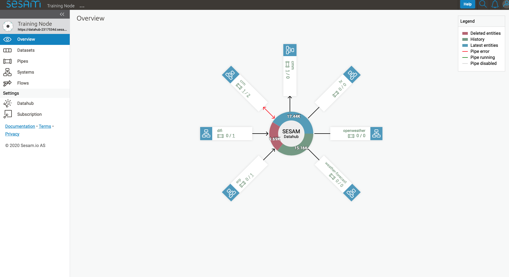
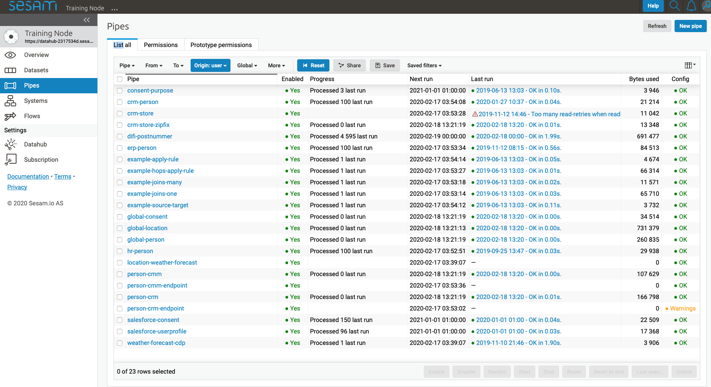
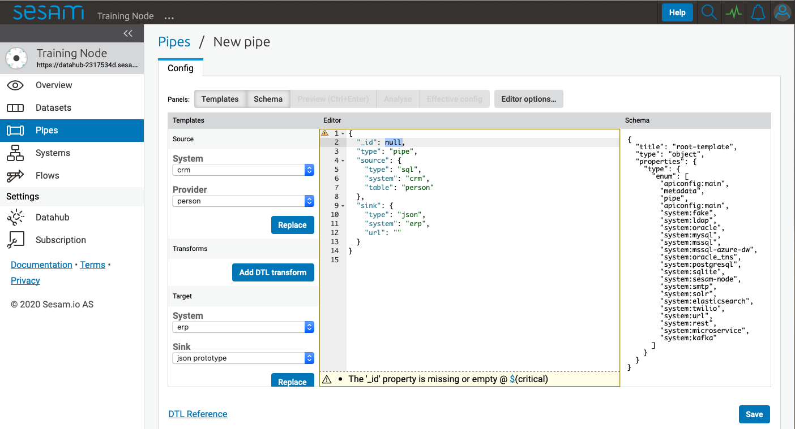
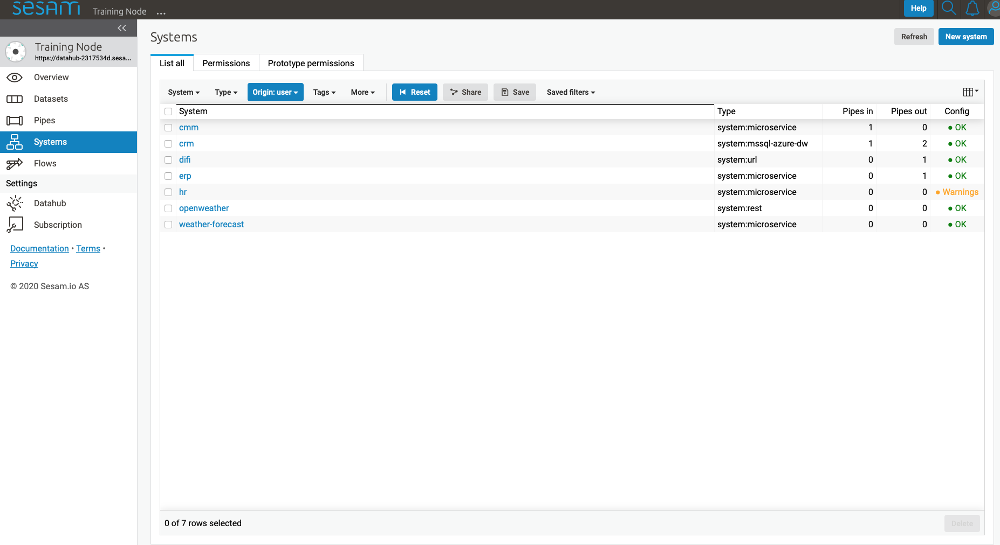
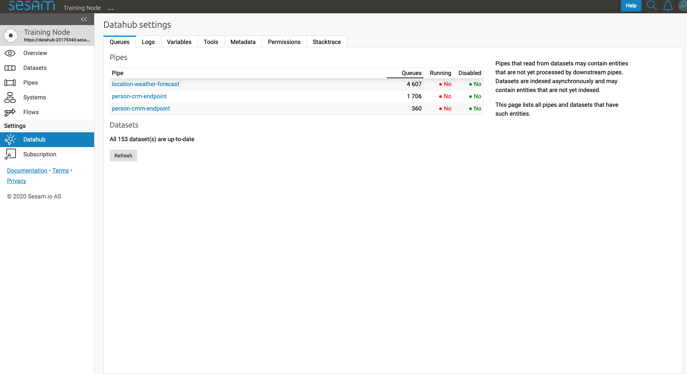
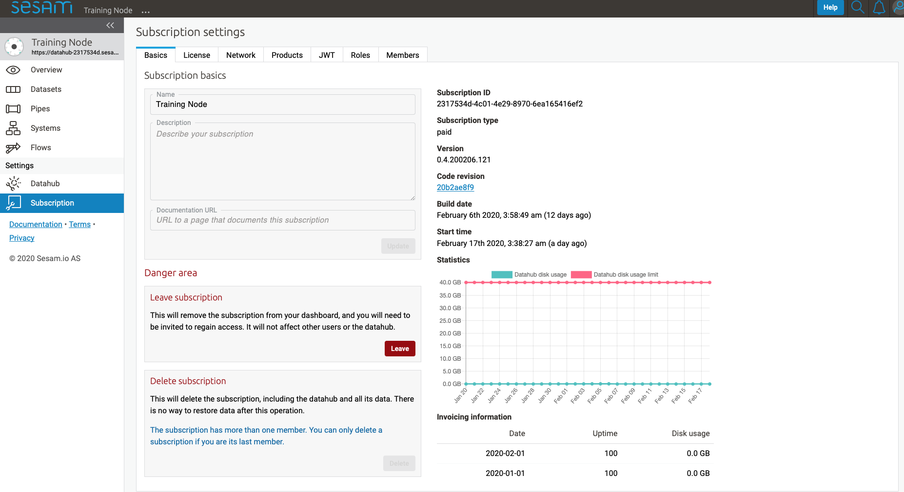

Sesam Management Studio¶
Introduction¶
Sesam Management Studio is used to configure, manage and administer Sesam nodes.
Management studio can be found here https://portal.sesam.io.
There is also an experimental version of the Management Studio where new features are introduced at an earlier stage before they are publicly released in the main portal.
If you are familiar with the Sesam concepts then the UI should be quite intuitive.
When choosing the specific node you require, it takes you into the management studio for that node. The first thing that meets you, is the overview.
Overview¶
When pressing Overview, it shows the Sesam integration for the particular node you are looking at. The figure illustrates which systems are connected, number of ingoing and outgoing pipes, deleted entities and history.
{kind=link}
Pipes¶
The pipes page contains a list of pipes generated for a particular node.
{kind=link}
Double clicking on a pipe takes you into this pipe’s working area.
By pressing “…” to the right of the pipe name, a menu with various options appear. We are going to go through the most commonly used.

New Pipe¶
When pressing the button “New Pipe”, it takes you into template for generating a pipe from scratch.
First we have to add value to “_id” or pipe cannot be saved. The naming conventions of pipe or the “id” can be found here: Naming conventions
As seen below, we have several tabs called “Panels” in Sesam. Press “Templates” and the available templates for each part of the pipe is available.
{kind=link}
Starting at top; “Source” needs to be defined. Frist menu available is “System” and we get available options for sources. Choose correct source for this pipe; .i.e. what is the source of data for this particular pipe you are working on.
Next you will choose your own node then appropriate pipe as source and in “Provider” (this is which table you’re collecting data from) you chose “Person” The press Replace and template DTL is pasted into your config as seen below.
{kind=link}
Next step is template for transforms. Press Add DTL transform and template for adding transforms to your pipe appears.
{kind=link}
Please visit DTL reference guide for most common transforms and functions and how they are used.
All pipes have a default sink that points to / creates a dataset with the same name as the pipe. You can specify your own sink with a template if required. This is done at the bottom of template under “Target”. This is where we specify where want to send the data to; which Sinks. This is specified in “System” and “Sink”. Press Replace and once again template pops into your config.
Now press “Save” then “Start”. To see progress and to make sure pipe is finished, press “Refresh”. To see result, go to “Output” tab.
To see an example please visit LINK example
Schema¶
Next to Templates tab, we find Schema. When pressing it, the Schema for this pipe shows up on right hand side of interface. A “schema” generally tells something about the structure of the data, i.e. metadata. Examples of metadata that the schema shows are e.g. whether a value is a string, Boolean, or an integer (text, true / false, or number).
{kind=link}
Editor Preferences¶
The tab to the far right takes you to page where you can choose some preferences on code style.
As you can see below you have some choices (and short explanation on what they mean) like “Automatic auto completion”, “Close nested array on new line” amongst others. Please have a look and click on the ones you would like to implement.
To the right side of the interface there is a list of available keyboard shortcuts which makes working in Sesam easier.

Systems¶
When pressing Systems, it gives a list of various systems defined on this node. In the column called “Type” it states which type of system it is e.g. whether this is a microservice, a mssql, url or rest.
By pressing one of the systems, it takes you into the config for a particular system. You find six tabs where you can manage permissions and secrets in addition to see status, see which pipes go in and out of system in graph tab and lastly get an overview.
As with pipes and datasets, you can press “…” next to the system name and from this menu you can delete or duplicate config for the system.
{kind=link}
Flows¶
In Sesam, a flow can be defined as a collection of pipes on one path, either from a global to an endpoint or vice versa.
On the Flows page you can get information about a flow as a whole, whether any pipe is disabled/errored out, as well as you get a total number of queues in a flow, for example.

Settings¶
Lastly, Sesam has “Settings” for both Datahub and your Subscription.
Settings for datahub manages queues, logs and permissions for your node. It also manages variables for various systems and metadata settings.
{kind=link}
For subscription Sesam has settings for e.g. license, JWT token and Network.
{kind=link}
User accounts¶
In order to use the Management Studio you first need to log in with your user credentials. You can either authenticate via a third party authentication provider (as for example Google or Azure), or create a user-account directly in the Management Studio.
Your user-account is uniquely identified by the email-address. That means that it is possible to use multiple authentication providers to log in as the same user, as long as the user credentials from the various authentication providers contain the same email address.
This comes with a small caveat: If you create a user-account directly in the Management Studio you are not required to verify that the email address you specify actually exists and that you own it. That basically means that anyone can claim to own any email-address, including addresses that actually belongs to someone else.
On the other hand: most of the third party authentication providers supplies a verified email address.
To avoid someone else to be able to log in with your email-address, the first login with a verified email-address will disable any unverified user credentials that has been previously used. All other settings on the existing user account will be kept, though.